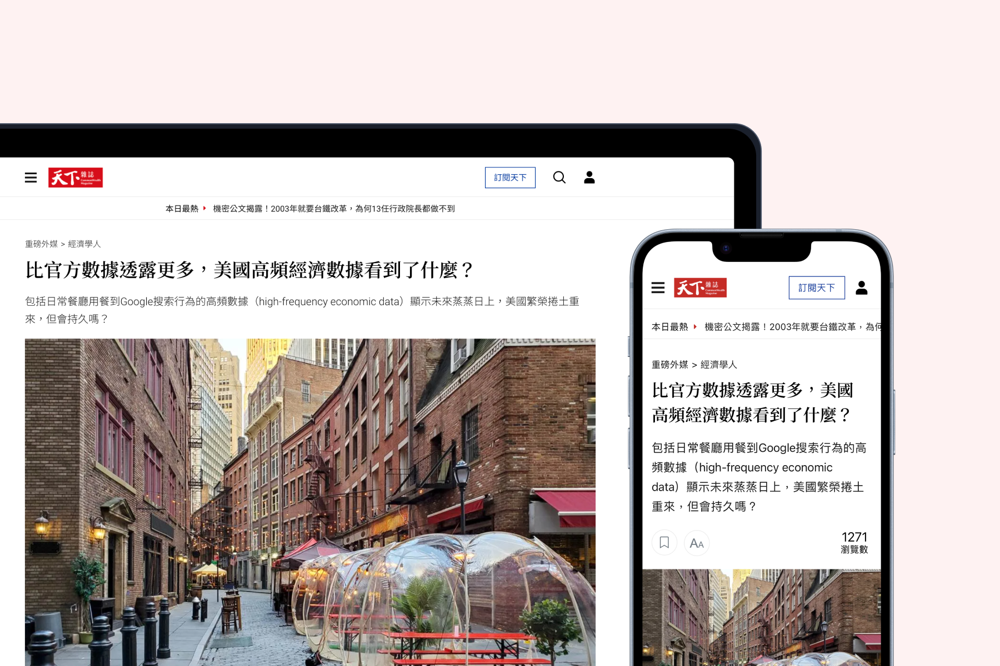

Background
產業背景
全球媒體產業正經歷前所未有的數位轉型浪潮
全球媒體數位轉型主要受到使用者行動閱讀習慣改變，以及全球媒體訂閱制營收模式 (Paywall) 興起影響。面對這樣的趨勢，《天下雜誌》在 2015 年正式宣布開啟數位轉型，推動「平網整合」的內容政策。2017 年，推出「全閱讀」服務，正式啟動線上新聞付費模式，開創台灣媒體數位轉型的新里程碑。
2019 年，尼曼新聞實驗室提出了「紙本媒體數位轉型四大里程碑」，包括：數位營收大於紙本營收、讀者營收大於廣告營收、數位營收成長大於紙本營收衰退，以及數位訂戶數超過紙本訂戶數。這些指標不僅為媒體轉型提供了清晰的方向，也突顯了數位產品體驗的重要性。
Problem
現況與問題
文章頁作為網站中流量最高的一頁，關鍵數據成效卻不顯著
在媒體數位轉型的關鍵時期，使用者的滿意度與留存率顯得更重要。《天下雜誌》文章頁面佔網站全站流量的 86.5%，是全站中佔比最大的一頁。然而，閱讀延續性和廣告收益的表現不佳，導致數位廣告收入和數位訂戶數的增長受到限制。
Research
研究與發現
需調整商業策略與優化產品體驗，提升數位媒體競爭力
我們透過競品分析、用戶訪談等方式，深入了解用戶需求和市場趨勢，也透過數據觀察和利害關係人訪談了解公司的商業考量以及文章頁的內容閱讀及廣告體驗等問題。
洞察全球趨勢：借鏡國際媒體龍頭，以數位體驗驅動營收轉型
國內外媒體龍頭（紐約時報、經濟學人、華盛頓郵報等）不斷地在更新各自的文章呈現方式與版面，不僅提供讀者更多元的閱讀方式同時也為自己帶來商業利益。數位訂閱制 (Paywall) 成為全球媒體主流營收模式，紐約時報在 2017 年數位訂閱收入首次超過廣告收入，華爾街日報、金融時報等也紛紛強化付費牆策略。
定義商業目標：優化數位廣告觸及，提升廣告點擊與商業曝光
透過利害關係人訪談，我們釐清了《天下雜誌》現階段的核心商業任務，除了衝刺「全閱讀」的訂閱數，穩定的數位廣告與廣編稿收益仍是重要支柱。團隊希望能在不損害品牌質感與閱讀流暢度的前提下，透過介面優化提升廣告的可視度與點擊率，達成內容與商業利益的雙贏。
重塑品牌形象：擺脫傳統，重新定義數位閱讀的「天下感」
天下官網已多年沒有更新，舊版介面乘載了紙媒時代的裝飾，飽和度低且不明顯，不僅設計風格老舊，也無數位設計系統可以運用，造成元件無一致性，操作體驗不佳。我們也透過讀者的質性訪談，瞭解到他們心中的天下是什麼模樣。希望可以賦予品牌符合現代美學，創造專屬於《天下雜誌》的「天下感」設計。
假設
透過改善文章頁的閱讀及廣告體驗，提升使用者的留存率與黏著度，進而帶動數位營收增長。
成功指標
- 跳出率：瀏覽單一頁面就離開網站的訪問次數百分比
- 頁面載入速度：從用戶點擊到頁面完全可用的時間
- 閱讀篇數：單次造訪期間閱讀的文章數量
- 廣告可視度：廣告在用戶視窗中可見的時間比例
- 廣告點擊率：廣告被點擊的次數與廣告曝光次數的比率
- 廣編稿流量：原生廣告或贊助內容的瀏覽量
Challenges
困難與挑戰
如何在眾多利害關係人間解決利益衝突與溝通成本問題？
由於網站改版牽涉到編輯、業務、技術、營運等多方利害關係人，各方意見不一，往往會產生利益衝突，有效地解決這些問題是設計提案過程中的一大挑戰。
事前 1:1 對齊，提前建立盟友
在設計提案的公開會議以前，我先透過 1:1 的方式跟關鍵角色溝通，了解各部門在意的底線、風險和期待後，先將這些「雷點」排除，確保正式提案前已有初步共識，在公開會議時可以有效減少反對的聲音，降低溝通損耗。
利用數據跟實際案例作為支撐
不用主觀的判斷，而是客觀的用使用者的訪談原話、競品範例或是數據，讓提案更有說服力，證明優化的方向是有理可循的，而不只是設計師憑感覺的設計。
針對不同角色，講他們想聽的
面對老闆時，著重說明該設計如何呼應公司的願景與設計風格，以及具體的時程規劃；面對業務單位時，強調廣告版位與付費功能的優化，如何提升點擊率與可視度；面對營運單位時，著重介紹新功能如何協助他們提升工作效率。
Design Decisions
設計決策
擺脫紙本設計思維，數位設計轉型
設計原則能夠幫助建立一致的理念與溝通框架、輔助進行大小設計決策、傳遞品牌和設計價值觀。天下的設計原則為「大方、有份量、現代、簡潔」，設計上需層次簡明、編排俐落、用字單純、用色明亮。
建立設計系統：透過標準化元件規範，提升內容易讀性與版位靈活度
- 字體：舊版網站的文字層級不明，影響閱讀體驗。重新規範字體後提供五個層級的樣式，明確區分主標、次標及內容，並引入思源宋體作為文章標題，做出區隔，增強層級感。
- 顏色：舊版網站直接使用紙本顏色，導致在螢幕上顯得暗淡。調整了配色後以天下品牌色紅色為基礎，搭配不同層級的灰色與強調色，讓整體配色更明亮飽滿。
- 設計系統：重新定義風格、字體、顏色、元件等使用方式，透過一致的設計語言提高開發效率以及設計品質。
調整資訊架構：提升閱讀體驗與廣告成效
舊版：採用雙欄式版面，廣告置於頁面上方與右側欄位，因「廣告視盲（Banner Blindness）」效應，使使用者容易忽略右側廣告與文末推薦內容，影響閱讀流暢度與曝光成效。
新版：改為單欄式頁面結構，將廣告整合進使用者自然滑動的視線動線，以「文中廣告」取代側欄，讓閱讀線性化並透過明確廣告標示維持信任感。上線後的數據驗證了這個判斷，廣告版位數量雖然有刪減，但每個版位的實際效益大幅改善。
Design Output
設計產出
以 UX 為核心的設計方案
少即是多：減少不必要的元素，給使用者更簡約的第一屏
舊版：文章標題被 Header 和主圖夾在中間，讓使用者難以快速找到吸引他們的內容。頁面中的功能按鈕、行銷版位、Logo 等顏色過多，容易造成視覺疲勞，分散使用者的注意力。
新版：移除頁面上不必要的資訊及樣式，來幫助使用者專注於閱讀文章標題及前言，打造一個簡單乾淨的第一屏，讓使用者可以很快地看到重點，藉此降低跳出率。
脈絡式設計：適當的時機出現相對應的功能，增加使用者互動性
舊版：分享功能僅在文章開頭和結尾出現，讓使用者難以找到分享操作。文章推薦則只在文末出現，導致未閱讀完的使用者無法輕易找到下一篇文章。
新版：分享功能在使用者滑動頁面時自動顯示，在閱讀過程中隨時能夠進行分享。而文章推薦則在使用者閱讀到 75% 時出現，鼓勵他們在接近文章結尾時立即接著閱讀下一篇。
廣告與內容互利共生：需維持兩者之間的平衡
- 編業分離：因《天下雜誌》採取編業分離原則，廣告不得影響內容產製，並且需遵循固定比例規範——每 6 則文章中必須有 1 則廣告，且需在介面中標示。
- 原生廣告：舊版標題顯示不完全，造成使用者不確定內容是什麼而不想點擊；新版將標題完整顯示，且把標題文案改為廣告感不那麼重的文案。
- 文中廣告：舊版文中廣告無特別標示，容易與文中圖片混淆；新版文中廣告加上字樣及背景做區隔，向用戶清晰標示廣告與內容的區別，增強信任感。
運用希克定律優化付費牆
舊版：付費牆上的選擇過多，更核心的問題是同一個畫面要服務不同需求的使用者（訪客、免費會員、一般會員），使用者不容易意識到自己是什麼身份要點擊什麼按鈕，且按鈕與連結樣式規範不一致。
新版：根據使用者身份不同，給予差異化設計的動態付費牆，並突出 CTA 樣式，直接引導使用者做下一步動作。
Results
專案成果
廣告成效顯著，但閱讀篇數增長不如預期
此次改版在多方面取得成功，顯著提升了商業指標和使用者黏著度。頁面載入速度更快，改善了手機閱讀體驗，使用者停留時間延長。廣告的可視度與點擊率大幅提升，新增的廣編稿流量為數位廣告營收帶來可觀增長。然而，閱讀篇數的數據增長仍未達預期。
設計方案迭代：針對閱讀篇數進行 A/B Testing
頁面上線後，由於閱讀篇數的數據增長不如預期，我們持續針對各個閱讀版位進行 A/B Testing，根據數據不斷調整版位與樣式，以提升每項關鍵指標，並為使用者提供更好的閱讀體驗。
為提高文末推薦文章的點擊率，我們設計了不同版型進行測試。結果顯示，對照組的使用者不太會使用左右滑動功能，多數僅點擊前兩篇文章。相比之下，實驗組雖然篇幅較長，但因為所有文章都可見，點擊率顯著高於對照組。最終，我們選擇了實驗組中以「上下直線型」閱讀的版型作為最終方案。
為提高文中推薦文章的點擊率，結果顯示搭配圖片的版面比純文字樣式更能吸引使用者點擊，因此選擇了含圖片的版型作為最終方案。
Reflection
學習與反思
設計師需作為商業需求與使用者需求間的橋樑
在與各個部門主管和利害關係人的多次對話中，我開始明白一個成功的產品設計必須能夠平衡商業利益與使用者需求。設計師需要具備商業思維，理解產品如何為公司創造價值與帶來營收，同時也要有效地將這些商業目標轉化為有用的解決方案。我學會運用數據說話，將使用者研究的發現與商業指標結合，用具體的數據或 UX 概念來支持設計決策，而不是單純依靠直覺或個人喜好，才更能夠說服別人。